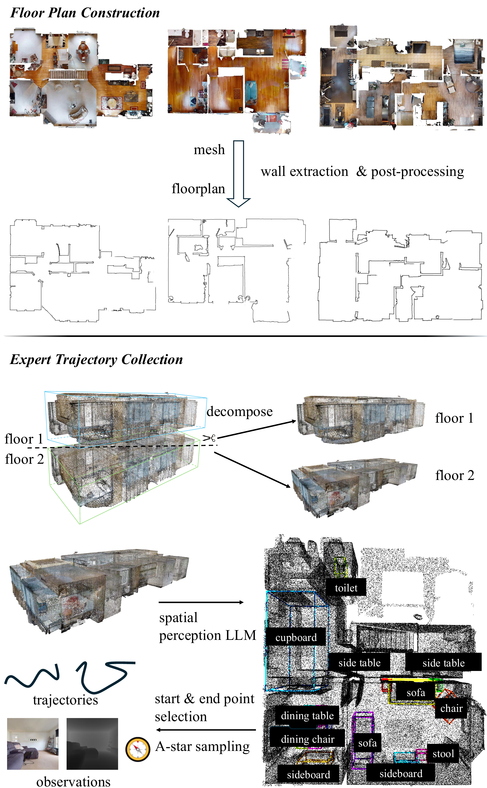
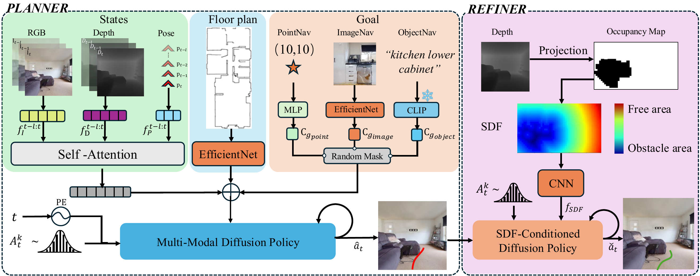

School of Computer Science & Technology, Beijing Institute of Technology
Abstract
Floor plans encapsulate compact spatial priors, enabling agents to navigate unseen scenes more efficiently. While prior work has explored floor plan–guided navigation, it has focused mainly on PointNav and a limited set of environments. To bridge this gap, we introduce FloVerse, a new task for floor plan–guided embodied navigation that unifies PointNav, ObjectNav, and ImageNav. To support this FloVerse, we assemble FloVerse-1.6K, a large-scale dataset of 1.6K scenes from HM3D and Gibson 4+, paired with corresponding floor plans, comprising 240K expert trajectories and 12M RGBD frames. We further propose ThreeDiff, a two-stage imitation learning policy comprising a planner, a diffusion-based multimodal goal-reasoning module trained via masked-modality modeling, and a refiner, a depth-based trajectory-refinement module for safe execution. Extensive experiments demonstrate that (1) floor-plan priors improve navigation performance across all goal modalities, and (2) ThreeDiff implicitly captures spatial information from floor plans. These results underscore the effectiveness of spatial priors and validate our proposed unified approach for floor plan–guided embodied navigation.

FloVerse data collection and construction pipeline.
We extract stable structural elements, such as walls, from object-containing meshes, as these elements correspond to features represented in floor plans. Vertices are first filtered based on their height and normal orientation, with a threshold of 1.25 m, effectively removing most objects. To further mitigate reconstruction artifacts and spurious noise, we apply morphological operations, including dilation and erosion, for denoising.
We build upon HM3D-OVON (379 categories, 181 scenes), cleaning viewpoints outside navigable regions to yield 304 categories across 169 scenes. To enrich diversity, we employ SpatialLM for additional object recognition with manual quality filtering, applied layer-wise to each scene point cloud. In total, FloVerse spans 325 object categories across 299 scenes.
We construct expert trajectories covering all three goal modalities. For PointNav, goals are randomly sampled positions on the navigable map. For ObjectNav and ImageNav, goals correspond to annotated object locations. Start positions are randomly chosen from navigable areas at least 5 m from the goal. The shortest path between each start–goal pair is computed via A* and discretized into waypoints at 10 cm intervals, recording RGBD observations and agent pose at each step. In total, FloVerse contains ~240K trajectories with ~12M RGBD–pose pairs, including ~74K ObjectNav/ImageNav episodes.
| Dataset | Train | Eval | ||
|---|---|---|---|---|
| HM3D | Gibson 4+ | HM3D | Gibson 4+ | |
| Scenes | 1,321 | 121 | 167 | 18 |
| Total episodes | 198,150 | 18,150 | 25,050 | 2,700 |
| IO episodes | 65,700 | — | 8,550 | — |

Overview of FloVerse. FloVerse is a two-stage trajectory generation framework for floor plan–guided navigation. In the first stage, goal-related features, floor plan representations, and observation embeddings are concatenated and used as the conditioning input to a diffusion model, which generates a coarse initial trajectory. In the second stage, depth-derived obstacle-awareness features are integrated with the initial trajectory and fed into a second diffusion model, which refines the trajectory to yield a final, obstacle-aware navigation path.
Experiments
We evaluate FloVerse against state-of-the-art baselines on the FloVerse benchmark and on standard embodied navigation tasks. All methods use the same observation modalities. Seen and Unseen splits test in-distribution performance and zero-shot floor plan generalization, respectively. Our model consistently outperforms baselines across all metrics, with particularly large gains on long-horizon tasks (>60 steps) and in unseen environments where floor plan priors provide the strongest signal.
| Method | SR ↑ | SPL ↑ | NE ↓ | SR ↑ | SPL ↑ | NE ↓ |
|---|---|---|---|---|---|---|
| Short (<40 steps) | Long (>60 steps) | |||||
| Baseline A | 62.4 | 51.3 | 3.21 | 38.7 | 29.6 | 5.84 |
| Baseline B | 66.1 | 54.8 | 2.97 | 41.2 | 32.1 | 5.41 |
| Baseline C | 70.5 | 58.2 | 2.63 | 45.8 | 36.4 | 4.92 |
| FloVerse (Ours) | 78.3 | 65.7 | 2.01 | 58.4 | 47.2 | 3.74 |
| ↑ Higher is better. ↓ Lower is better. | ||||||
Table 3 presents ablation results on the Unseen split, validating the contribution of each component. Removing the floor plan encoder causes the largest performance drop, confirming that global spatial priors are essential for cross-environment generalization.
| Variant | Floor Plan Enc. | Cross-Attn. | SR ↑ | SPL ↑ | NE ↓ |
|---|---|---|---|---|---|
| w/o Floor Plan | ✗ | ✗ | 34.2 | 25.6 | 6.47 |
| w/o Cross-Attn. | ✓ | ✗ | 41.8 | 33.1 | 5.32 |
| Concat. Fusion | ✓ | – | 45.3 | 36.8 | 4.91 |
| FloVerse (Full) | ✓ | ✓ | 52.1 | 43.4 | 4.12 |
Qualitative Results
Representative navigation episodes from FloVerse, showing the agent traversing diverse indoor environments guided by floor plan priors.
Agent navigates across multiple rooms using floor plan topology as a global prior.
Zero-shot transfer to a floor plan not seen during training.
Side-by-side comparison of FloVerse vs. baseline on a complex multi-room layout.
Reference
If you use FloVerse in your research, please cite our paper.